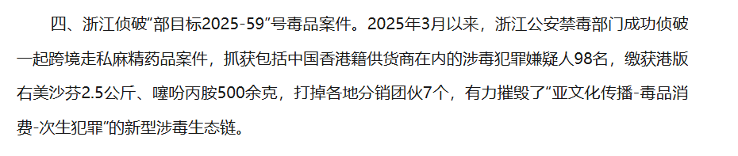

x-square「公子」様
@xx1012000456
有感兴趣的可以私信我，资料来自我自己案子-优格案卷笔录-有很多你们没有的细节

药物实验室
@RXdruglab
右美沙芬就是之前的“港美”事件，我个人无证据猜测是某个买家的家长报警的，然后顺藤摸瓜抓了一大堆人，不都是一个团伙的，我知道的就有两组人。2.5公斤不折算的话大概就是一万多片，数字还算差不多。
噻吩丙胺应该就是可达鸭的，我看过公安人员说“噻吩丙胺也叫小鸭丸”，这个可能是内部通报过。 https://t.co/jOwbMwGqcV